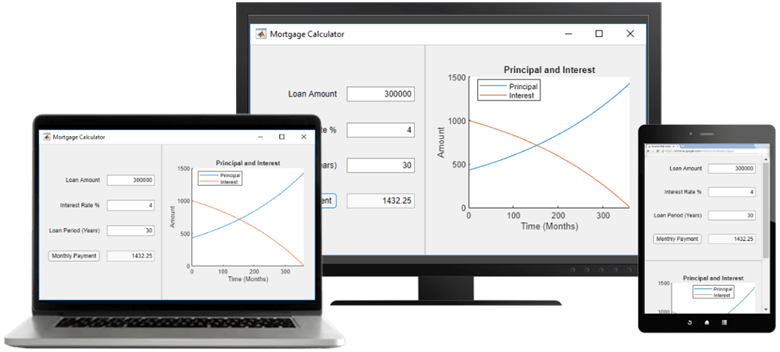
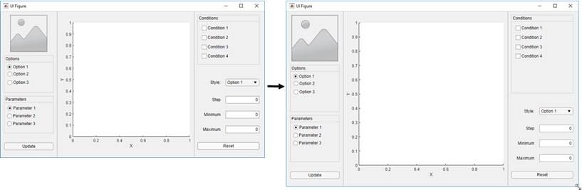
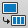

Apps with Auto-Reflow
Apps with auto-reflow are preconfigured app types that optimize the viewing experience by automatically adjusting the size, location, and visibility of the app content in response to screen size, orientation, and platform. Use apps with auto-reflow if you expect to run or share your apps across multiple environments or desktop resolutions.

What Is Auto-Reflow?
Apps with auto-reflow extend the existing auto-resize behaviors that are on by default in all App Designer apps. These apps detect and adapt to the available screen size when they are first displayed. Both 2- and 3-panel apps have a large flexible-size panel, intended for visualizations like plots. As the app changes size, the large panel grows or shrinks, depending on the space available.

When an app is resized beyond a certain predefined threshold, the panels in the app reflow and reorder to make the best use of the space. As panels reorder themselves, they and the components in them dynamically adjust in size while extra space between components (white space) is also reduced.

When an app becomes very small, auto-resize stops eliminating white space and
resizing components. This can put some components outside the visible part of the
window. To access these components, set the Scrollable property
of the panels to 'on'. This enables scroll bars to appear when
necessary.
Create New App with Auto-Reflow
The App Designer Start Page includes options to create new 2-panel and 3-panel apps with auto-resize and auto-reflow, as well as canvas interactions to guide app building. No additional code is needed to achieve the reflowing and resizing behavior. To view an example using a 2-panel app with auto-reflow, see Create App That Resizes with Auto-Reflow.
Convert Existing App to Use Auto-Reflow
You can also convert an existing app into an app with auto-reflow by expanding the
Convert
 drop-down list from the File
section of the Canvas tab and selecting 2-Panel
App with Auto-Reflow or 3-Panel App with
Auto-Reflow.
When you convert an existing app to an app with auto-reflow, App Designer:
Creates a duplicate of your app with
_convertedappended to the file name. Your original app file is not changed.Automatically adds preconfigured panels and a grid layout to your app to provide the automatic reflow and resize behaviors.
Creates a
SizeChangedFcncallback function in order to control the layout of the app as the figure is resized.
In some cases, after App Designer has converted your app, you may need to update your callback code or the position of some components. This table describes some examples of adjustments you that you may need to make.
| Symptom | Explanation | Suggested Action |
|---|---|---|
| Components overlap | App Designer tries to maintain the relative positions of your components, but you may need to make some minor adjustments. | Adjust the position of components as needed. |
| Callback code does not behave as expected | When the preconfigured panels are added to your app the hierarchy of the components in your app changes. If your callbacks reference components based on their parent, they may need to be updated. | Update the parent of the components in your callbacks. |
Existing SizeChangedFcn callback on the UI
figure does not behave as expected | Apps with auto-reflow generate their own
SizeChangedFcn callback for the figure.
If your app already had a SizeChangedFcn
callback for the figure, App Designer disconnects it from the
figure, but it does not remove the code. | After your app has been converted, modify or remove the
SizeChangedFcn callback that was
disconnected from the figure. You can assign it to another
container component, or remove it if it is no longer
needed. |
Remove Auto-Reflow Behavior
You can remove auto-reflow behavior from an existing app by expanding the
Convert
drop-down list from the File
section of the Canvas tab and selecting App
without Auto-Reflow.
When you convert an app with auto-reflow to an app without auto-reflow, App Designer:
Creates a duplicate of your app with
_convertedappended to the file name. Your original app file is not changed.Removes the preconfigured grid layout from the app with auto-reflow.
Removes the
SizeChangedFcncallback function that is used to control the layout of the app with auto-reflow.